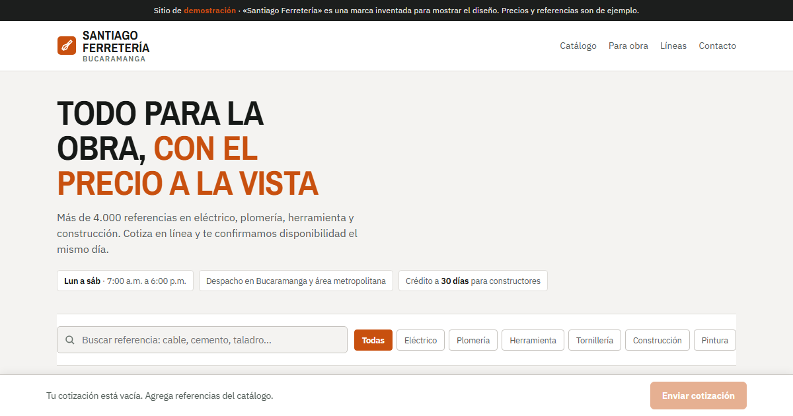
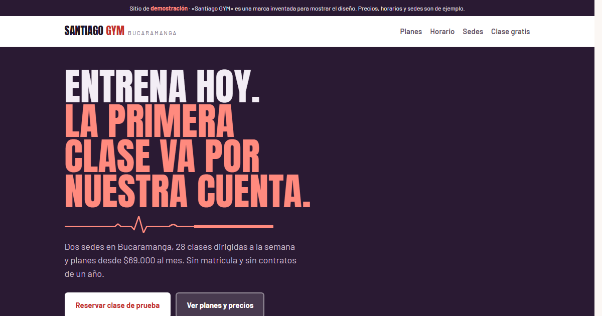

Ferretería
Catálogo B2B · CotizadorCatálogo filtrable por línea con referencia y precio, cotizador que arma el pedido completo y cuenta para maestros de obra.
Hago sitios web para negocios de Bucaramanga que ya tienen reputación en Google pero no tienen a dónde mandar al cliente. Entrega en dos semanas.
Ejemplos
Tres sitios completos y funcionales que puede abrir ahora mismo. Toque los filtros, arme una cotización, reserve una clase: todo funciona.

Catálogo filtrable por línea con referencia y precio, cotizador que arma el pedido completo y cuenta para maestros de obra.

Planes con precio a la vista, horario de clases con cupos por día y reserva de clase de prueba que llega directo al WhatsApp.

Catálogo con filtros por colección, políticas de cambio y envío, ubicación del local y horarios.
Los tres son ejemplos de demostración con marcas inventadas — «Santiago Ferretería», «Santiago GYM» y «Santiago Prendas» — hechos para mostrar el diseño y las funciones. Los precios, horarios y referencias son de ejemplo, y no llevan reseñas porque no se inventan opiniones de clientes.
Qué incluye
Cada sitio sale con lo necesario para que lo encuentren, le escriban y sea suyo desde el primer día.
Diseñado para el celular primero, porque ahí lo van a abrir sus clientes.
Que aparezca cuando alguien busque su servicio en su zona de la ciudad.
Botón que abre el chat con el mensaje ya escrito, y catálogo ordenado.
Política de tratamiento, aviso de privacidad y autorización, como exige la ley.
Contraste verificado con instrumento, no a ojo. Se opera con teclado.
Registrado con sus datos. El sitio es suyo, no mío.
Cómo trabajo
De la primera llamada a la entrega, en unas dos semanas.
Revisión a mitad de camino. Plan de un sitio de 4 a 5 secciones.
Soy Santiago Sierra, desarrollador web en Bucaramanga. Hago sitios para negocios de la ciudad: comercio, talleres, consultorios, gimnasios.
También trabajo en soporte técnico y atención al cliente, y eso cambia cómo hago las cosas: sé qué se siente cuando un cliente escribe y nadie le contesta. Por eso los sitios que hago están armados para que el cliente encuentre lo que busca y pueda escribir en dos toques.
Llevo poco tiempo haciendo sitios para negocios, y prefiero decirlo que inventar experiencia. Por eso el ejemplo de su página va sin costo y sin compromiso: el riesgo lo corro yo, no usted.
Contacto
Escríbame por WhatsApp y le digo de una si le puedo ayudar o no. Sin insistir después.